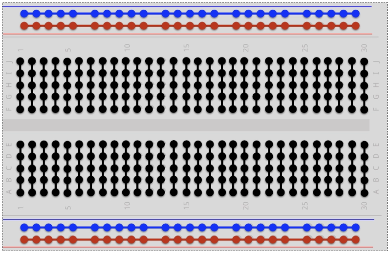
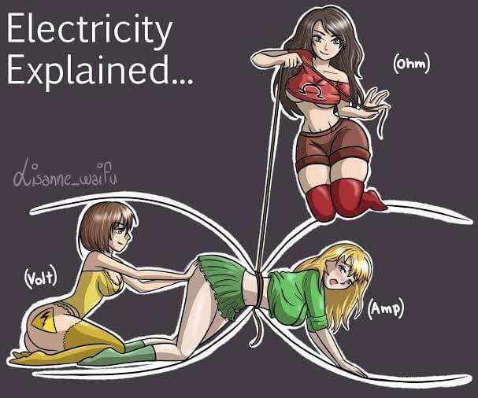
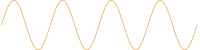

Robotika 2. óra
2025
Pin
pin.h
#pragma once
#include "pico/stdlib.h"
class Pin {
bool out;
bool _value;
public:
uint pin;
Pin(uint _pin, bool _out, bool _pull_up);
Pin(uint _pin, bool _out);
Pin(uint _pin);
~Pin();
void enable();
void disable();
bool value(bool __value = 0);
void toggle();
};
pin.cpp
#include "pin.h"
#include "pico/stdlib.h"
Pin::Pin(uint _pin, bool _out, bool _pull_up)
: pin(_pin), out(_out), _value(0) {
enable();
if (_out)
value(_value);
if (_pull_up)
gpio_pull_up(pin);
}
Pin::Pin(uint _pin, bool _out) : Pin(_pin, _out, false) {}
Pin::Pin(uint _pin) : Pin(_pin, GPIO_OUT) {}
void Pin::enable() {
gpio_init(pin);
gpio_set_dir(pin, out);
}
void Pin::disable() {
gpio_deinit(pin);
}
Pin::~Pin() {
disable();
}
bool Pin::value(bool __value) {
_value = __value;
if (out) {
gpio_put(pin, _value);
return 0;
} else {
return gpio_get(pin);
}
}
void Pin::toggle() {
value(!_value);
}
Breadboard
Rövid ⚡ kitérő
Rövid ⚡ kitérő
Rövid ⚡ kitérő
Ohm törvénye: $R = \frac{U}{I}$
R G B led

R G B led
TODO: led wiring
rgb_led.h
TODO: ilyenem még nincs is, holnap megírom
rgb_led.cpp
TODO: ilyenem még nincs is, holnap megírom
Servo
TODO: servo wiring
servo.h
#pragma once
#include "pico/stdlib.h"
#include "pwm.h"
class Servo {
PWM pwm;
float min, mid, max;
public:
Servo(uint pin, float _min, float _mid, float _max);
void duty(float d);
void deg(float d);
void rad(float r);
};
servo.cpp
#include "servo.h"
#include <algorithm>
#include <cmath>
Servo::Servo(uint pin, float _min, float _mid, float _max) : pwm(PWM(pin)) {
min = _min;
mid = _mid;
max = _max;
pwm.freq(50);
}
void Servo::duty(float d) {
d = 1 - std::clamp(d, 0.0f, 1.0f);
float duty;
if (d ≤ 0.5)
duty = min + ((mid - min) * d * 2);
else
duty = mid + ((max - mid) * (d * 2 - 1));
pwm.duty(duty);
}
void Servo::deg(float d) {
d = (d + 90) / 180;
duty(d);
}
void Servo::rad(float r) {
r = (r + 0.5 * M_PI) / M_PI;
duty(r);
}
Buzzer
TODO: buzzer wiring
Buzzer
- hang ⇒ frekvencia, hangerő
- folytonos (vs mikrokontroller)
- folytonos jel "szimulálása"
- ötlet: gyorsan ki be kapcsoljuk (Pulse Width
Modulation)
- frekvencia: adódik
- hangerő: mennyi ideig van bekapcsolva
- ötlet: gyorsan ki be kapcsoljuk (Pulse Width
Modulation)
PWM
PWM
PWM
pwm.h
#pragma once
#include "pico/stdlib.h"
#include "hardware/pwm.h"
#include "pin.h"
class PWM {
uint pin;
uint frequency;
float duty_cycle;
uint slice_num;
uint channel_num;
void calculate_values();
public:
static const uint CLOCK_SPEED = 150e6;
static const uint CLKDIV = 100;
PWM(uint _pin);
~PWM();
void enable();
void disable();
void freq(uint _frequency);
void duty(float _duty_cycle);
};
pwm.cpp
#include "pwm.h"
#include <algorithm>
void PWM::calculate_values() {
pwm_set_clkdiv(slice_num, CLKDIV);
uint wrap = (CLOCK_SPEED / CLKDIV / (float) frequency);
uint level = duty_cycle * wrap;
pwm_set_wrap(slice_num, wrap);
pwm_set_chan_level(slice_num, channel_num, level);
}
PWM::PWM(uint _pin)
: pin(_pin),
frequency(0),
duty_cycle(0),
slice_num(pwm_gpio_to_slice_num(_pin)),
channel_num(pwm_gpio_to_channel(_pin)) {
enable();
}
PWM::~PWM() {
disable();
}
void PWM::enable() {
gpio_set_function(pin, GPIO_FUNC_PWM);
pwm_set_enabled(slice_num, true);
}
void PWM::disable() {
gpio_deinit(pin);
}
void PWM::freq(uint _frequency) {
frequency = _frequency;
frequency = std::clamp(frequency, CLOCK_SPEED / CLKDIV / 0xffff, CLOCK_SPEED / CLKDIV);
calculate_values();
}
void PWM::duty(float _duty_cycle) {
duty_cycle = _duty_cycle;
duty_cycle = std::clamp(duty_cycle, 0.0f, 1.0f);
calculate_values();
}
Buzzer
#include "pico/stdlib.h"
#include "pwm.h"
int main() {
stdio_init_all();
PWM buzzer(4);
buzzer.duty(0.5);
buzzer.freq(2000);
sleep_ms(2000);
buzzer.duty(0);
}
config.h
jó lenne, ha a konfigurációt is ki lehetne csoportosítani...
config.h
#pragma once
#include "pico/stdlib.h"
const uint BUZZER_PIN = 4;
const uint BUTTON_PIN = 0;
const uint BUTTON_DEBOUNCE_INTERVAL_US = 5e5;
const uint ULTRA_TRIG_PIN = 20;
const uint ULTRA_ECHO_PIN = 19;
const uint HB_L1_PIN = 14;
const uint HB_L2_PIN = 15;
const uint HB_L_PWM = 10;
const uint HB_R1_PIN = 22;
const uint HB_R2_PIN = 11;
const uint HB_R_PWM = 21;
const uint HB_PWM_FREQ = 2000;
const uint SERVO_PIN = 16;
const float SERVO_MIN = 0.032f;
const float SERVO_MID = 0.075f;
const float SERVO_MAX = 0.130f;
const uint RGB_SENSOR_SDA_PIN = 26;
const uint RGB_SENSOR_SCL_PIN = 27;
const uint RGB_SENSOR_CHAN = 1;
const uint RGB_SENSOR_LED_PIN = 17;
const uint RGB_SENSOR_INTEGRATION_TIME = 40;
const uint RGB_SENSOR_GAIN = 3;
const uint PROXY_PIN = 2;
const uint ENC_LA = 6;
const uint ENC_LB = 7;
const uint ENC_RA = 8;
const uint ENC_RB = 9;
Motorok
- áram ⇒ forgás
- fun fact: fordítva is működik
- a forgás iránya az áram irányától függ
- de hogy adunk neki több áramot mint amit a pico tud?
- és hogy cseréljük meg a kábeleket menet közben???
H bridge
H bridge
TODO: H bridge wiring
H bridge
| xIN1 | xIN2 | FUNCTION |
|---|---|---|
| PWM | 0 | Forward |
| 0 | PWM | Reverse |
h_bridge.h
#pragma once
#include "pico/stdlib.h"
#include "pwm.h"
class HBridge {
Pin l1;
Pin l2;
PWM l_pwm;
Pin r1;
Pin r2;
PWM r_pwm;
float last_l_speed;
float last_r_speed;
public:
float l_speed;
float r_speed;
HBridge(uint _l1, uint _l2, uint l_pwm, uint _r1, uint _r2, uint r_pwm, uint pwm_freq);
void enable();
void disable();
void drive(float l, float r);
};
h_bridge.cpp
#include "h_bridge.h"
#include "pico/stdlib.h"
#include <algorithm>
#include <cmath>
HBridge::HBridge(uint _l1, uint _l2, uint _l_pwm,
uint _r1, uint _r2, uint _r_pwm, uint pwm_freq)
: l1(_l1), l2(_l2), l_pwm(_l_pwm),
r1(_r1), r2(_r2), r_pwm(_r_pwm),
last_l_speed(0), last_r_speed(0) {
l_pwm.freq(pwm_freq);
r_pwm.freq(pwm_freq);
enable();
}
void HBridge::enable() {
drive(last_l_speed, last_r_speed);
}
void HBridge::disable() {
last_l_speed = l_speed;
last_r_speed = r_speed;
drive(0, 0);
}
void HBridge::drive(float l, float r) {
l_speed = std::clamp(l, -1.0f, 1.0f);
r_speed = std::clamp(r, -1.0f, 1.0f);
l1.value(l_speed < 0);
l2.value(l_speed > 0);
l_pwm.duty(abs(l_speed));
r1.value(r_speed > 0);
r2.value(r_speed < 0);
r_pwm.duty(abs(r_speed));
}